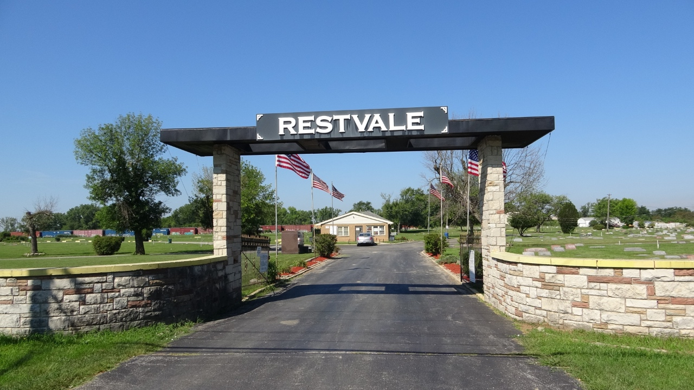

Restvale Cemetery

Located in Alsip, Illinois, a southwestern suburb of Chicago, Restvale Cemetery first opened in 1927. Alsip sits twenty miles southwest of Chicago. Chicago Blues Musicians and educators are buried at Restvale and it is one of the last African American cemeteries to open in the area. The other being Burr Oak Cemetery. Over forty-five Blues musicians are buried here including Muddy Waters, Jimmy Rogers, Hound Dog Taylor, Earl Hooker, Magic Sam, Sammy Lawhorn, J.B Hutto, and Kansas Joe McCoy. Restvale’s address is 11700 South Laramie Avenue, Alsip, Illinois, 60803.